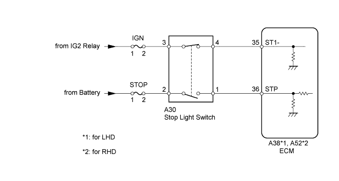
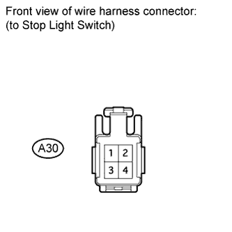
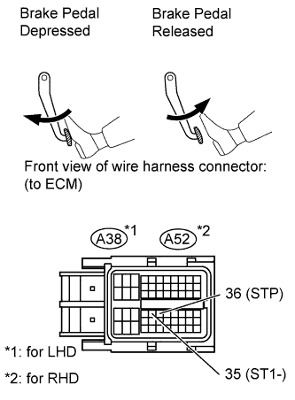
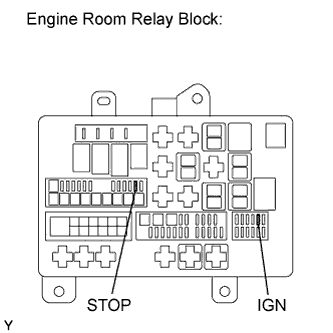

DTC P0504 Brake Switch "A" / "B" Correlation |
| Signals | Brake Pedal Released | In Transition | Brake Pedal Depressed |
| STP | OFF | ON | ON |
| ST1- | ON | ON | OFF |
| DTC Detection Drive Pattern | DTC Detection Condition | Trouble Area |
| Release and depress brake pedal with engine switch on (IG) | Conditions (a), (b) and (c) continue for 0.5 seconds or more (1 trip detection logic): (a) Engine switch is on (IG). (b) Brake pedal is released. (c) The STP signal is off when the ST1- signal is off, or the STP signal is on when the ST1- signal is on. |
|
| DTC No. | Data List |
| P0504 | Stop Light Switch |

| Brake Pedal Operation | Specified Condition |
| Depressed | ON |
| Released | OFF |
| 1.CHECK STOP LIGHT SWITCH ASSEMBLY (TERMINAL B VOLTAGE) |
 |
Disconnect the stop light switch connector.
Measure the voltage according to the value(s) in the table below.
| Tester Connection | Condition | Specified Condition |
| A30-2 - Body ground | Always | 11 to 14 V |
| A30-3 - Body ground | Engine switch on (IG) | 11 to 14 V |
|
| ||||
| OK | |
| 2.INSPECT STOP LIGHT SWITCH ASSEMBLY |
 |
Remove the stop light switch.
Measure the resistance according to the value(s) in the table below.
| Tester Connection | Switch Condition | Specified Condition |
| 1 - 2 | Switch pin not pushed | Below 1 Ω |
| Switch pin pushed | 10 kΩ or higher | |
| 3 - 4 | Switch pin not pushed | 10 kΩ or higher |
| Switch pin pushed | Below 1 Ω |
|
| ||||
| OK | |
| 3.CHECK ECM (STP AND ST1- VOLTAGE) |
 |
Disconnect the ECM connector.
Turn the engine switch on (IG).
Measure the voltage according to the value(s) in the table below.
| Tester Connection | Brake Pedal Condition | Specified Condition |
| A38-35 (ST1-) - Body ground | Released | 11 to 14 V |
| Depressed | 0 to 3 V | |
| A38-36 (STP) - Body ground | Released | 0 to 3 V |
| Depressed | 11 to 14 V |
| Tester Connection | Brake Pedal Condition | Specified Condition |
| A52-35 (ST1-) - Body ground | Released | 11 to 14 V |
| Depressed | 0 to 3 V | |
| A52-36 (STP) - Body ground | Released | 0 to 3 V |
| Depressed | 11 to 14 V |
|
| ||||
|
| ||||
| 4.INSPECT FUSE (STOP, IGN) |
 |
Remove the STOP and IGN fuses from the engine room relay block.
Measure the resistance according to the value(s) in the table below.
| Tester Connection | Condition | Specified Condition |
| STOP fuse | Always | Below 1 Ω |
| IGN fuse |
|
| ||||
|
| ||||
| 5.REPLACE STOP LIGHT SWITCH ASSEMBLY |
Replace the stop light switch assembly (Click here).
|
| ||||
| 6.REPLACE ECM |
Replace the ECM (Click here).
|
| ||||
| 7.REPAIR OR REPLACE HARNESS OR CONNECTOR |
|
| ||||
| 8.CHECK FOR SHORTS IN ALL HARNESSES AND CONNECTORS CONNECTED TO FUSE AND REPLACE FUSE |
| NEXT | |
| 9.CONFIRM WHETHER MALFUNCTION HAS BEEN SUCCESSFULLY REPAIRED |
Connect the intelligent tester to the DLC3.
Clear the DTCs (Click here).
Turn the engine switch off.
Turn the engine switch on (IG) and turn the tester on.
Brake pedal released and depressed.
Enter the following menus: Powertrain / Engine / DTC.
Confirm that the DTC is not output again.
| NEXT | ||
| ||